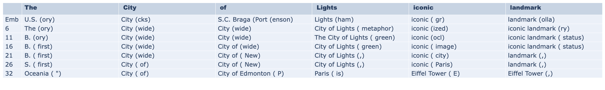
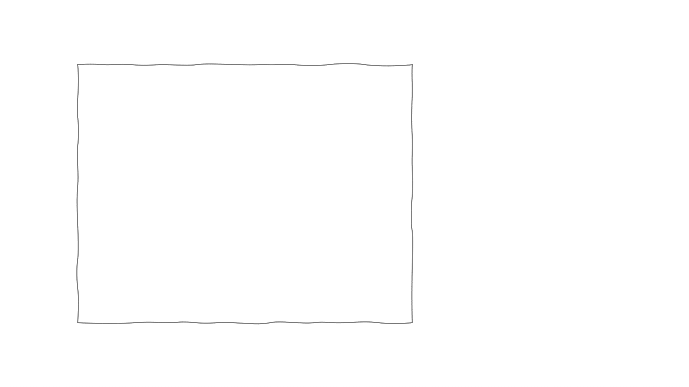

Project Overview
📄 Research Paper
This repository contains the complete codebase for our research paper on entity representations in auto-regressive Large Language Models. Our work introduces novel methods for understanding how LLMs encode and process entity information.
Our research is built upon TransformerLens, an interpretability library that provides harmonized hooks and loading mechanisms for various LLM architectures.

Example visualization of the Entity Lens methodology
Our Method: Entity Mention Reconstruction
We introduce a novel approach for analyzing entity representations through contextual decoding. Our method provides insights into how auto-regressive models encode entity information across different layers and contexts.
🎬 Contextual Generation Process
The animation below demonstrates our contextual decoding setup as described in Section 3.1 of our paper:

Key Features
Entity Lens
Advanced visualization and analysis of entity representations across transformer layers
TransformerLens Integration
Built on the robust TransformerLens library for seamless model analysis
Comprehensive Datasets
Includes multiple datasets for entity analysis: CoNLL2003, TACRED, WebNLG, and custom datasets
Multi-Model Support
Works with various model architectures including GPT-2, Phi, Pythia, and Mistral models
Detailed Analysis
Provides plotting utilities and result processing for comprehensive analysis
Interpretability Tools
Advanced tools for understanding entity processing in language models
Installation
Install PyTorch
This project is built on PyTorch. Install it from the official website based on your system configuration.
Create Virtual Environment (Optional)
It's recommended to create a dedicated environment for this project:
python -m venv env
source env/bin/activate
pip install --upgrade pipInstall Dependencies
Install all required packages using the requirements file:
pip install -r requirements.txtClone the Repository
git clone https://github.com/VictorMorand/EntiyRepresentations.git
cd EntiyRepresentationsDemo & Usage
🚀 Interactive Demo
Explore our Entity Lens methodology through an interactive Jupyter notebook that provides a comprehensive walkthrough of the analysis process.
📓 Demo.ipynb
The demo notebook presents:
- Step-by-step walkthrough of the Entity Lens methodology
- Interactive visualizations of entity representations
- Real-time analysis of different model architectures
- Contextual vs. non-contextual comparison studies
Repository Structure
Our codebase is organized into several key components:
📁 Core Scripts
LabelExtractor.py- Entity label extractionplotting.py- Visualization utilitiesprocessResults.py- Result analysisutils.py- Helper functions
💾 Checkpoints
Pre-trained models and saved states for various architectures including GPT-2, Phi, Pythia, and Mistral models across different layers and epochs.
📊 Datasets
Curated datasets for entity analysis including CoNLL2003, TACRED, WebNLG, and custom relation datasets for comprehensive evaluation.
🔬 Experiments
Complete experimental setups and configurations used in our research, enabling full reproducibility of results.